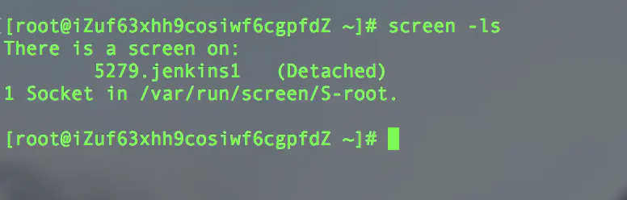

一、Java jdk 安装
安装之前先检查一下系统有没有自带open-jdk
命令：
1 | rpm -qa |grep java复制代码 |
1 | rpm -qa |grep jdk复制代码 |
1 | rpm -qa |grep gcj |
如果没有输入信息表示没有安装。
如果安装可以使用rpm -qa | grep java | xargs rpm -e --nodeps 批量卸载所有带有Java的文件 这句命令的关键字是java
首先检索包含java的列表
yum list java*
检索1.8的列表
1 | yum list java-1.8* |
安装1.8.0的所有文件
1 | yum install java-1.8.0-openjdk* -y |
使用命令检查是否安装成功
1 | java -version |
到此安装结束了。这样安装有一个好处就是不需要对path进行设置，自动就设置好了
二、jenkins安装和配置
安装 jenkins
\1. 下载依赖
1 | sudo wget -O /etc/yum.repos.d/jenkins.repo https://pkg.jenkins.io/redhat-stable/jenkins.repo |
\2. 导入秘钥
1 | sudo rpm --import https://pkg.jenkins.io/redhat-stable/jenkins.io.key |
\3. 安装
1 | yum install jenkins |
\4. 查找jenkins安装路径
1 | rpm -ql jenkins |
jenkins相关目录释义：
/usr/lib/jenkins/：jenkins安装目录，war包会放在这里/etc/sysconfig/jenkins：jenkins配置文件，“端口”，“JENKINS_HOME”等都可以在这里配置。/var/lib/jenkins/：默认的JENKINS_HOME。/var/log/jenkins/jenkins.log：jenkins日志文件。
初始化 jenkins服务器
\1. 编辑 jenkins 配置文件
为了不因为权限出现各种问题，这里直接修改用户为root。
1 | vim /etc/sysconfig/jenkins |
\2. 修改 jenkins 端口
若默认8080端口未被占用，可不修改。若端口已被占用，则修改端口为其他端口，并将对应端口开放。
\3. 启动 jenkins
推荐用 screen 工具启动 jenkins 服务，可以后台运行，不用担心远程端口关闭导致服务停止。screen 具体用法这里就不展开了，可以参考：juejin.im/post/684490…
启动 jenkins
1 | java -jar /usr/lib/jenkins/jenkins.war --httpPort=8899 |
使用 screen 启动 jenkins （jenkins1是为jenkins服务创建的会话名称）
1 | screen -S jenkins1 java -jar /usr/lib/jenkins/jenkins.war --httpPort=8899 |
分离屏幕后台运行 jenkins：
先按 control + A ，再按 D
列出当前所有的 session：
1 | screen -ls |
可以查看到在后台运行的 jenkins 服务，即便服务器 logout 了，Jenkins 服务依然可以使用。

\4. 访问 jenkins 地址
浏览器输入： http://[服务器ip地址]:[端口号]
若启动成功，会出现解锁 jenkins 页面。
输入命令获取密码
1 | cat /var/lib/jenkins/secrets/initialAdminPassword |
然后按照页面一步步操作即可：解锁jenkins -> 安装推荐的插件 -> 创建第一个管理员账号
创建管理员账号这一步，也可以直接选择使用admin账号，需要输入上面获取到的密码。
接下来就可以使用jenkins了。

...
...
Copyright 2021 sunfy.top ALL Rights Reserved